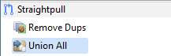
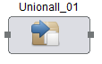

Hydrograph Help
Union All
Hydrograph Release Version 1.0
Union All gathers records from one or more input sources into a single output. It is present under the Straight Pull category in the component palette since no transformations are performed on the incoming data.
Union All, needs the schema of each of the input sources to be exactly same.The gathered data from each input source is transmitted via a single output port.It may contain 2 or more input ports and has no unused port on it. Also, the sort order is not maintained in the output records.
The Union All component can be easily distinguished in the component palette.

An enlarged version of the same is depicted when dragged on the canvas.

For further reference click on the links below: